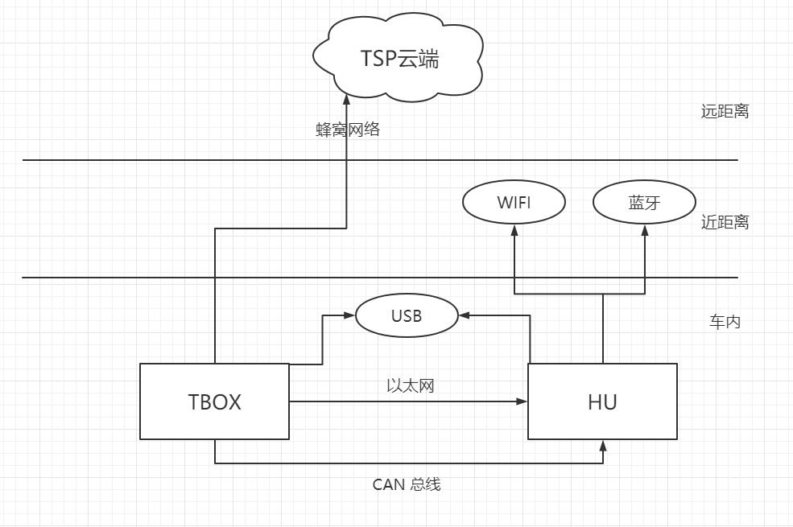
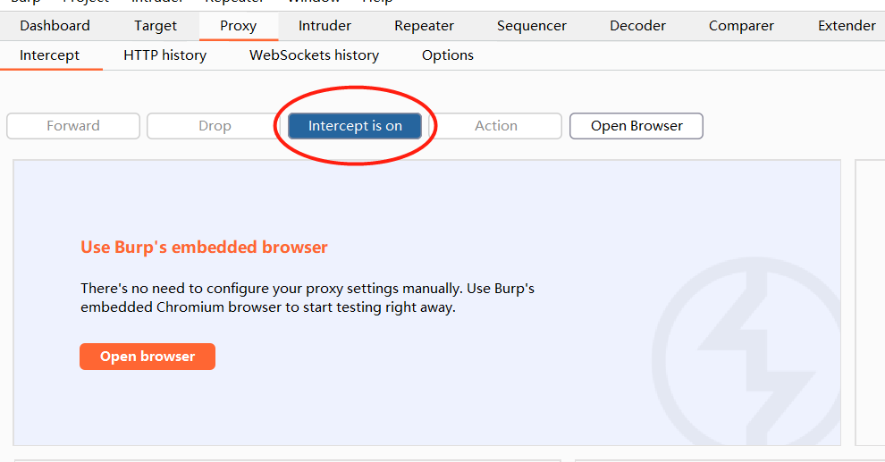

车联网安全入门总结
这篇文章主要介绍了自己在学习车联网安全渗透时从无到有的一系列过程，会从比较基础的车联网体系框架谈起。在自己的学习过程中并没有发现总结的比较全面且实用性强的入门总结，这让我前期测试时走了许多弯路，因此本篇的重点也会体现在各种场景下的实际操作。十分感谢同组导师和组员们在学习过程中的答疑解惑。:)
本文主要涉及到的是威马汽车安全渗透测试的一些经验。其他车型可能会有较多变动，但是整体结构和测试方法可以举一反三。
车联网安全结构简述
车联网即车辆物联网 (IoV)，旨在通过车载设备实时收集车辆动态信息，并在车辆运行中提供各种功能服务。更具体地来说，车联网的存在提供了车辆和云端服务器、用户移动终端和其他车辆的通信功能，从而能够提供更精确的车辆导航和信息监控、用户远程控车等复杂但便捷的功能。
在进行车联网安全渗透测试时，我们可以将整个体系结构简化为下图：

通过分析图中的各个组成成分，我们可以比较清晰地分析出车辆存在的攻击面，以及可能的攻击方式。
TSP 云端
TSP (Telematics Service Provider) 即汽车远程服务提供商。该部分可看作为一个云端服务器，并给车辆提供一些必要接口。车辆的一些实时信息比如位置信息，空调开关情况等都会上传给 TSP。
HU
HU 即车载娱乐信息系统，是车辆控制和娱乐应用一体化的智能多媒体设备。
面向用户的一侧多为 Android 系统，提供了导航、视频播放等功能。车机中的 MCU 芯片使得车机可以通过 CAN 总线接入 CAN 网络进行车控，同时车机也可以通过 Wifi、蓝牙等来和用户的手机进行连接。一般会提供 USB 接口供调试。
TBOX
TBOX 是和 TSP 云端以及用户手机通信的主要部分，可以通过蜂窝网络与 TSP 云端进行通信。TBOX 通过 Ethernet-over-USB 方式共享一个局域网络，同时也有 MCU 芯片，能够接入 CAN 网络。
用户移动终端
多为用户手机。在下载了车厂指定的 APP 后绑定账号和车辆，即可通过该 APP 进行车辆的控制等。
攻击面分析
本节会对上述结构中每个成分容易受到攻击的部分进行分析，以及阐述该从哪些方向进行重点测试。
用户移动终端攻击面
用户移动终端存在的攻击面主要存在于车厂指定的手机 APP 中。在测试时我们会重点关注 APP 本身的安全性，这其中包括但不限于通信安全和应用安全。
考虑到用户手机端无法像车内设备和 TSP 云端一样能够设置较高的保护措施，可以从一下几个方面进行攻击测试：
- APP 应用本身的漏洞
- 数据包窃取和伪造（这其中包括 PKI 身份认证系统）
- 完整性检查绕过
我们重点分析车厂本身实现的安卓层和 native 层代码。
HU 攻击面
车机本身可以看作一个车辆上的安卓手机，其上运行了多个应用，这些应用会分别使用到蓝牙、Wifi、USB等接口，而这又不免与安卓内核进行交互。同时车机还会直接向 CAN 总线发起车控指令，因此重点在于车机上的应用安全、系统和硬件安全的防护。
同时，车机上还存在登录功能，用户可以通过登录已绑定的账号来通过手机对车辆进行控制，这也需要我们进行测试。
总结攻击面如下：
- APP 应用本身的漏洞
- 通信方式实现及其协议栈的漏洞
- 安卓系统的漏洞
TBOX 攻击面
TBOX 集成了与 TSP 和用户移动端的通信，并且也涉及到 OTA 固件升级，可以说是整个体系中通信的桥梁。同时由于使用的是 linux 系统，也存在系统安全的问题。
TSP 云端攻击面
主要在于云端暴露的接口，我们可以通过这些接口来测试云端提供的功能有没有能导致越权等非法操作的漏洞。一般测试方法是通过分析车端或手机端对 TSP 信息的解析方式来分析消息内容，在需要时需要构造数据进行黑盒测试。由于本人在测试过程中接触该方面较少，这部分暂时略去。
测试步骤及遇到的问题
手机 APP 测试
脱壳
首先 release 版本的 APP 可能会有壳。最佳方案是通过工具将 APP 脱壳。（不建议在测试项目进行中自己手脱，学习成本较高且容易拖慢整体进度，可以下来自己学习一下）
在此之前可以先学一下基本的加壳原理，以及识别壳的方式，可以参考这篇文章。
本次威马测试中，通过 apktool 解包 apk 查看 native-lib 库，可以发现存在百度加固的特征 native 库。这是一种比较早的壳，可以用 Frida-Apk-Unpack 脱掉。脱出的 dex 文件将保存在 /data/data/<包名>/ 目录下。需要注意的是，这个工具脱第一代壳的效果比较好，但是对于二代及之后的壳较差。对于二代壳可尝试通过 FART 进行破解。
安卓抓包
在审代码的时候推荐根据应用的特征和接口来定位重点函数。这需要结合抓取的网络包与反汇编代码来分析。比如点击登录按钮，手机端会向云端 xxx/Login 接口发送请求，那么我们在分析的时候就可以先定位 xxx/Login 在 APP 中被引用的位置，从而定位到登录的主要逻辑。
手机端的抓包推荐使用 burpsuite 安装证书的方式，具体操作流程可参考 burpsuite 官方文档。
证书安装完成后，点击如下按钮可以选择开启或关闭数据包阻断。开启阻断后必须手动选择 Forward 或者 Drop 当前数据包。

上述方式简单直接，并且抓到的数据包能够很清晰的看出其 http 结构。但是保护完善的 APK 一般都会开启 SSL Pinning，这会导致即使安装了 burpsuite 证书也无法抓到从该 APK 发出的 https 报文。一般这种情况我们可以使用 frida 框架从应用的层面抓获未经过 SSL 加密的数据包。这里推荐 r0capture 工具，可以捕获目前安卓版本中几乎所有的数据包。最终会把抓包的信息保存为 .pcap 文件，可以用 wireshark 打开分析。
动态调试
安卓下的动态调试可以大致分为 .so 文件的动态调试和 apk 本身的动态调试。
对于调试 apk ，可以直接使用 JEB 的动态调试功能，测试机打开网络调试或 USB 调试功能即可。但这种方式由于设备本身数据传输的问题，响应较慢，且效率不高。另一种方是通过 frida hook 的方式来 hook 一些关键函数的参数及返回值，来达到更高效率的信息收集。这里推荐 objection 工具，该工具集成了一些通用的 frida 功能，能够更方便我们调用一些 hook 功能。
如果需要调试 .so 文件，可以尝试使用 IDA 中的动态调试功能，具体操作步骤如下：
- 将
IDA安装目录下的dbgsrv/android_server通过adb传进测试机的/data/local/tmp目录下，给予相应执行权限并运行。 - pc 中打开控制台，进行 adb 端口转发：
adb forward tcp:23946 tcp:23946。 - 测试机中打开 apk，将目标
.so文件通过IDA打开，点击Debugger -> Attach -> Remote ARMLinux/Android debugger，将ip:port设置为127.0.0.1:23946。如果能够连接成功即可以看到测试机的进程表，选择 attach 到目标应用即可。
重放
在分析代码流程、数据包分析结束后，就可以尝试作为中间人进行重放攻击了。前提条件是存在没有走 SSL Pinning 的攻击点，否则我们实际攻击时无法伪造证书，也就失去了重放的意义。
可以直接使用 burpsuite 的 repeat 功能修改一些字段后进行重放。也可以通过 frida 修改掉一些参数模拟重放的效果。
如果遇到了开启 SSL Pinning 的情况，而我们又不仅仅需要重放，还需要查看收到的结果，就需要考虑进行 SSL Pinning Bypass。如果你有一个装有 Xposed 框架的 root 机，最简单的方式是使用 SSL_Unpinning 。其优点在于可以 hook 现有的几乎所有安卓应用，且非常稳定。缺点是需要 Xposed 的频繁重启。
HU 应用测试
可以直接在一个局域网下进行 adb 网络调试。
1 | adb connect <ip>:<port> |
由于车机相比手机更笨重，不方便移动，为了便于调试可以用 QtScrcpy 来远程连接到车机的屏幕，然后用鼠标点击触发一些功能。
之前也提到过，HU 面向用户一端使用的安卓系统，因此 HU 上的应用测试也多为对安卓应用的逆向。测试过程中我们重点关注的还是能否造成越权以及对中间人攻击的尝试。同时一些安卓系统已经爆出的提权 CVE 我们也需要在车机上测试，并给出修复建议。
另外，车机上由于需要和 TSP、Tbox 通信，有时会开放一些端口，这些端口能否被攻击者利用也应纳入到测试范围中。
HU 抓包
与安卓抓包的方式基本相似，不同的是 HU 上不一定提供了有图形界面的安装证书的方式，需要我们手动安装证书到证书目录下。
首先我们将 burpsuite 的证书以 der 或者 cer 后缀导出，并在 linux 环境下运行以下命令：
1 | openssl x509 -inform DER -subject_hash_old -in cacert.cer | head -1 |
这里我们就将自己的证书 push 到了安卓设备上。接下来我们需要将证书安装到 /system/etc/security/cacerts 目录下。
1 | cp -r /system/etc/security/cacerts/ /data/local/tmp/ |
TBOX 测试
连接到目标 TBOX 的方式有两种：
- 通过给的 adb 调试线连接 PC 进行调试
- 在 HU 上编译一份 adb，HU 与 TBOX 物理连接，连接到 HU 上后通过 adb 连接到 TBOX。
如果使用第二种方式，在动态调试时 debug server 开的端口需要通过 adb 进行两层端口转发。
在本项目中，Tbox 为 linux 系统，其运行的为 arm 架构的 elf，可以比较方便的用 IDA 打开进行反编译。默认情况下 TBOX 上会跑许多进程，这些进程之间通过 IPC 进程间通信来交换信息，每个进程的状态改变都有可能导致其他进程的状态修改。
总结
- 通常会将手机端和车端联合起来测试，最好有一台 root 的测试机比较方便。
- 本次项目中对固件相关的内容接触较少，空余时间可以补充一下。
- 安卓 Frida 可实现许多项目中需要的功能，可以考虑自己实现一些便于调试的框架（如 Hook 后多次自动重放等）。
- 安卓底层的一些机制，以及 IPC 通信之类的机制还需要补充。